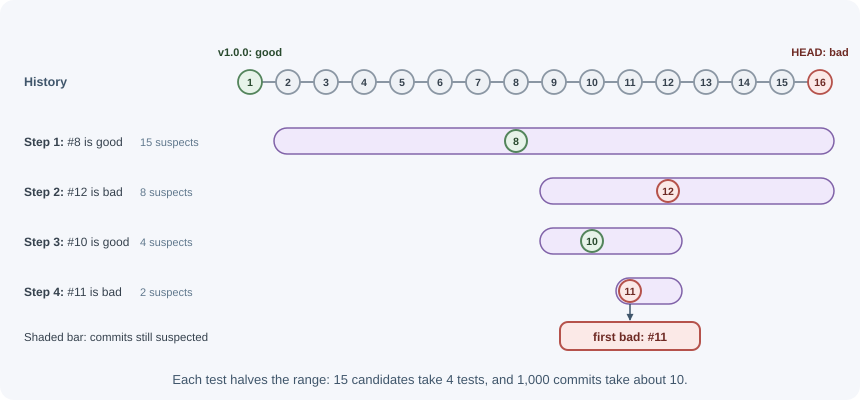

Undoing Mistakes and Recovery¶
Everyone commits to the wrong branch, resets too far, merges something broken, or pushes a file that should never have left their machine. Git is unusually forgiving: almost everything that was ever committed can be recovered, and most mistakes can be undone in one command, if you pick the right one.
This lesson covers git restore, the three modes of git reset, git
revert (including reverting a merge), recovering with the reflog,
finding a bad commit with git bisect, git stash, safe force pushing
with --force-with-lease, removing a leaked secret from history, and
recovering a deleted branch.
Why it matters¶
The difference between a five-minute fix and a lost afternoon (or a
security incident) is usually knowing which undo command fits the
situation. Rewriting history that others have pulled creates more
damage than the original mistake; using reset --hard on uncommitted
work destroys it permanently; deleting a leaked API key in a new commit
leaves it readable in history forever. Knowing the safe options, and
knowing that the reflog keeps a safety net under most of them, lets you
fix mistakes calmly and quickly, including during incidents when main
needs a revert right now.
Real-world usage¶
- GitHub's sensitive data guidance. GitHub's
Removing sensitive data from a repository
says to revoke or rotate a leaked secret first, then rewrite history
with
git-filter-repo2.47 or later using--sensitive-data-removal, force push, and contact GitHub Support to clean pull request refs and cached views, because pull request refs are read-only and forks keep their own copies. - Reverting faulty merges. Git's own how-to Revert a faulty merge explains that reverting a merge undoes its changes but not its history, so a later re-merge of the same branch brings nothing back unless you first "revert the revert".
- Bisecting in the Linux kernel. The kernel documentation
Bisecting a regression
shows
git bisectas the standard way to find the change that caused a regression across thousands of commits, which is how many kernel regressions are reported to the right developer.
Popular tools and providers: the Git CLI (restore, reset,
revert, reflog, bisect, stash), git-filter-repo and the BFG
Repo-Cleaner for history rewriting, GitHub's "Restore branch" and
"Revert" buttons on pull requests, and secret scanning with push
protection to stop leaks before they happen.
How it works¶
Pick the right undo¶
| Situation | Command | Rewrites history? |
|---|---|---|
| Discard unstaged edits to a file | git restore <file> |
No |
| Unstage a file but keep the edits | git restore --staged <file> |
No |
| Fix the last commit's message or add a forgotten file (not pushed) | git commit --amend |
Yes (last commit) |
| Undo the last commit, keep its changes staged | git reset --soft HEAD~1 |
Yes |
| Undo the last commit, keep changes as edits | git reset HEAD~1 |
Yes |
| Throw away commits and edits entirely | git reset --hard <commit> |
Yes |
| Undo a commit that is already on a shared branch | git revert <sha> |
No (adds a commit) |
| Undo a merged pull request (merge commit) | git revert -m 1 <merge-sha> |
No |
| Get back commits after a bad reset or rebase | git reflog, then git reset --hard <sha> or git branch <name> <sha> |
Moves a ref |
| Find which commit introduced a bug | git bisect |
No |
| Set work aside temporarily | git stash |
No |
| Remove a secret from all history | Rotate the secret, then git filter-repo |
Yes (whole repository) |
The dividing line: if the commits are only in your repository, rewrite freely; if others have them, add new commits that undo the change.
git restore: working tree and index¶
git restore (Git 2.23 and later) copies file content from one place to
another without touching commits:
git restore src/app.js # discard unstaged edits (copy index -> working tree)
git restore --staged src/app.js # unstage (copy HEAD -> index), edits stay
git restore --staged --worktree src/app.js # both: back to the committed version
git restore --source=HEAD~3 src/app.js # bring back the file as it was 3 commits ago
git restore --source=v2.3.0 -- package.json
git restore <file> without --staged is destructive for that file's
uncommitted edits; they were never saved in Git, so they cannot be
recovered. Older guides use git checkout -- <file> and
git reset HEAD <file> for the same operations.
git reset: move the branch, optionally reset the index and files¶
git reset <commit> moves the current branch (and HEAD) to
<commit>. The mode decides what happens to the index and working tree:
![Diagram: commits A, B, C with main at C; git reset with a mode to B always moves the branch and HEAD back to B; with --soft the index and working tree are unchanged so C's changes are staged; with --mixed (the default) the index is reset to B so C's changes become unstaged edits; with --hard the index and working tree are reset to B so C's changes and uncommitted edits are discarded; commit C still exists and git reset --hard ORIG_HEAD or a reflog entry brings it back, but uncommitted edits destroyed by --hard cannot be recovered.](../git-reset-modes.svg)
| Mode | Branch/HEAD | Index | Working tree | Typical use |
|---|---|---|---|---|
--soft |
moves | unchanged | unchanged | Squash the last few commits into one, or recommit with a new message |
--mixed (default) |
moves | reset | unchanged | Undo commits but keep the changes to re-stage selectively |
--hard |
moves | reset | reset | Throw away commits and all local changes |
--keep |
moves | reset | reset, but aborts if a locally modified file would change | A safer --hard |
Before a reset, Git saves the old tip in ORIG_HEAD, so an immediate
git reset --hard ORIG_HEAD undoes the reset.
git reset --soft HEAD~3 # turn the last 3 commits into one staged change
git commit -m "feat(tasks): add due dates"
git commit --amend¶
--amend replaces the last commit with a new one (new hash) containing
the current index and, optionally, a new message:
git add src/forgotten-file.js
git commit --amend --no-edit # same message, file added
git commit --amend -m "fix(auth): reject expired refresh tokens"
Amending is a rewrite. If the commit was pushed to a branch only you use,
follow with git push --force-with-lease; if others may have it, make a
new commit instead.
git revert: undo by adding a commit¶
git revert <sha> creates a new commit that applies the inverse of
<sha>'s changes. History is preserved, nobody's clone breaks, and the
revert itself is reviewable, which makes it the right tool for shared
branches and for production incidents:
git revert 4f9e2c1 # opens an editor with "Revert ..." message
git revert --no-edit 4f9e2c1 7a1b2c3 # several commits, newest first is usual
git revert --no-commit HEAD~3..HEAD # stage the inverse of a range, commit once
Reverting a merge. A merge commit has two parents, so Git needs to
know which side is the "mainline" to keep. On main, the first parent is
the previous main:
git revert -m 1 <merge-sha> # undo everything the merged branch brought in
The catch: the revert removes the changes, but the branch's commits remain in history as merged. If the team fixes the branch and merges it again, Git sees those commits as already merged and only brings in the new fix commits. The correct sequence is to revert the revert first, then merge the fix:
git revert <revert-sha> # re-apply the original feature
git merge feat/due-dates # now brings in only the new fixes
With squash merging, a whole PR is a single ordinary commit, so git
revert <sha> works without -m, and GitHub's "Revert" button on a
merged PR opens a revert PR for you.
The reflog: Git's safety net¶
Every time HEAD or a branch tip moves (commit, reset, rebase, checkout,
merge, pull), Git appends an entry to that ref's reflog. The reflog is
local to your clone and is not pushed.
git reflog
# a1b2c3d (HEAD -> feat/due-dates) HEAD@{0}: reset: moving to HEAD~2
# 9f8e7d6 HEAD@{1}: commit: add due-date validation
# 5c4b3a2 HEAD@{2}: commit: add dueDate field
# a1b2c3d HEAD@{3}: checkout: moving from main to feat/due-dates
git reflog show feat/due-dates # the branch's own history of positions
git log -g --oneline # reflog as a log
git show main@{yesterday} # where main was yesterday (time-based)
![Diagram: git reflog lists a reset moving to HEAD~2 at a1b2c3d, then earlier commits 9f8e7d6 add due-date validation and 5c4b3a2 add dueDate field, then the checkout to feat/due-dates; after the reset, feat/due-dates points at B while commits D and E still exist but no ref points to them; running git branch rescue 9f8e7d6 creates a ref to E so D and E are reachable again; alternatively git reset --hard HEAD@{1} puts the branch back; reflog entries expire after 90 days, or 30 for unreachable commits, before gc prunes them.](../reflog-recovery.svg)
Recovery is always the same two steps: find the hash in the reflog, then
point a ref at it (git branch rescue <sha>, or git reset --hard <sha>
on the current branch). Commits that no ref or reflog entry reaches are
"dangling"; git fsck --lost-found lists them, which can even recover a
dropped stash.
git bisect: binary search for the bad commit¶
When something worked in v2.3.0 and is broken now, git bisect finds
the first bad commit by binary search. You mark one good and one bad
commit; Git checks out the midpoint; you test and mark it; the range
halves each time.

The number of tests is about log2 of the number of commits in the range:
16 commits need 4 tests, 1,000 need about 10, and 100,000 only about 17.
With an automated test, git bisect run does the whole search:
git bisect start HEAD v2.3.0 # bad first, then good
git bisect run npm test -- tests/pagination.test.js
# ...
# 7440a9ddffa19bdcd28e9cd9286abbec4b314b26 is the first bad commit
git bisect reset # return to where you started
The script's exit code drives the search: 0 means good, 1 to 127
(except 125) means bad, and 125 means "cannot test this commit, skip
it" (for example, it does not build). Manual steps are git bisect good,
git bisect bad, and git bisect skip. Useful options:
git bisect start --first-parentfollows only the first parent, so on amainbuilt from merged PRs it identifies the PR that broke things.- Alternate terms (
git bisect oldandnew, or your own with--term-oldand--term-new) work for non-bugs, such as "when did this endpoint get slow?". git bisect log > bisect.logandgit bisect replay bisect.logsave and repeat a session.
Bisect works best when every commit builds and passes tests on its own, which is one more reason for clean, small commits.
git stash: set work aside¶
git stash saves uncommitted changes as special commits on a stack and
cleans the working tree, so you can switch context:
git stash push -m "wip: due-date validation" # tracked changes only
git stash push -u -m "wip incl. new files" # include untracked files
git stash push --staged -m "only what is staged" # Git 2.35+
git stash list
# stash@{0}: On feat/due-dates: wip incl. new files
git stash show -p stash@{0} # see the diff
git stash pop # apply and drop the newest
git stash apply stash@{1} # apply, keep it in the list
git stash branch feat/validation stash@{1} # new branch from the stash's base
git stash drop stash@{1}
Stashes are local, easy to forget, and conflict-prone when popped onto a branch that moved on. For anything you will not return to within the hour, a "WIP" commit on a branch is safer.
Force pushing safely¶
After rewriting your own pushed branch (rebase, amend, reset), the remote rejects a normal push because it is not a fast-forward. Your options:
| Command | Behavior | Risk |
|---|---|---|
git push --force |
Overwrite the remote branch unconditionally | Silently deletes commits others pushed |
git push --force-with-lease |
Overwrite only if the remote still points where your origin/<branch> says |
Safe unless something fetched in the background and updated origin/<branch> |
git push --force-with-lease --force-if-includes |
Also requires that the remote tip you are overwriting was integrated into your local branch (Git 2.30+) | The safest form |
git config --global alias.pushf "push --force-with-lease --force-if-includes"
git pushf
Protected branches (main, release branches) should block force pushes
entirely, so these commands only ever apply to your own feature branches.
Removing a leaked secret from history¶
Suppose .env with a database password was committed and pushed. A new
commit deleting the file does not help: the password is in history, in
every clone, possibly in forks and CI logs. The order of operations
matters:
- Rotate the secret first. Revoke the key or change the password immediately. Once the old value is useless, the leak is contained, and for many secrets this is the only step that truly matters, because you cannot know who already copied it.
- Check for misuse in the provider's audit logs for the window the secret was exposed.
- Decide whether to rewrite history. If the data itself is sensitive (personal data, a key that cannot be rotated), rewrite:
# In a fresh clone with all refs (git-filter-repo 2.47+)
git clone --mirror git@github.com:example/taskflow-api.git
cd taskflow-api.git
git filter-repo --sensitive-data-removal --invert-paths --path .env
# or replace strings in every file of every commit:
# git filter-repo --sensitive-data-removal --replace-text ../expressions.txt
git push --force --mirror origin
- Clean what you cannot push to. Pull request refs on GitHub are
read-only, and forks have their own copies; GitHub Support can
dereference PRs, remove cached views, and run garbage collection, given
the "First Changed Commit(s)" printed by
git filter-repo. - Have collaborators re-clone (or carefully rebase their branches); merging old branches would reintroduce the secret.
- Prevent recurrence: add the file to
.gitignore, enable secret scanning with push protection, and add a pre-commit secret scanner (see hooks, .gitignore, and large repositories).
Every commit hash from the leak onward changes, signatures on rewritten commits are dropped, and open PRs may become unusable, so merge or close open PRs first and announce the rewrite.
Recovering a deleted branch¶
git branch -D feat/due-dates # oops
# Deleted branch feat/due-dates (was 9f8e7d6).
git branch feat/due-dates 9f8e7d6 # the hash is in the delete message...
git reflog | grep due-dates # ...or in the reflog
If the branch only existed on GitHub and was deleted after its PR merged or closed, the pull request page offers a Restore branch button. If it is gone from GitHub but a teammate or CI runner still has it, push it back from their clone.
When to use and when not to use¶
| Tool | Use when | Do not use when |
|---|---|---|
restore |
Discarding or unstaging local file changes | You might want those edits later (stash or commit instead) |
reset --soft / --mixed |
Reshaping local, unpushed commits | The commits are on a shared branch |
reset --hard |
Abandoning local work you are sure about | You have uncommitted edits you might need |
commit --amend |
Fixing the latest unpushed commit | Others have pulled it |
revert |
Undoing anything already shared, especially on main |
Cleaning up your private branch (rewrite instead) |
reflog |
Recovering after reset, rebase, amend, or branch deletion | Recovering never-committed edits (they were never stored) |
bisect |
A regression with a known good point | No reliable way to test a commit |
stash |
Short context switches | Long-term storage of work |
| History rewrite for secrets | Data that cannot be rotated or must not remain anywhere | Instead of rotating the secret |
Practical examples¶
Committed to main instead of a feature branch (not pushed)¶
git branch feat/due-dates # new branch pointing at the commits
git reset --hard origin/main # move main back to the remote state
git switch feat/due-dates # continue on the branch
Roll back a bad deploy caused by a merged PR¶
git switch main && git pull --ff-only
git log --oneline --first-parent -5
# 3c2b1a0 Merge pull request #212 from example/feat/due-dates
git revert -m 1 3c2b1a0 --no-edit
git push # or open a PR if main is protected
Rolling back the deployment (redeploying the previous artifact) is usually faster than waiting for a revert to build; do both, so the next deploy does not reintroduce the bug. See rollbacks and safe releases.
Find a pagination regression automatically¶
#!/bin/sh
# tests/bisect-pagination.sh: exit 0 = good, 1 = bad, 125 = skip
npm ci --silent || exit 125 # cannot build this commit: skip it
node --test tests/pagination.test.js
git bisect start HEAD v2.3.0
git bisect run sh tests/bisect-pagination.sh
# Bisecting: 7 revisions left to test after this (roughly 3 steps)
# ...
# 7440a9d... is the first bad commit
git bisect reset
Keep the bisect script outside the tree (or untracked) when older commits would not contain it; Git checks out old commits while bisecting.
Recover from a rebase that went wrong¶
git rebase origin/main # conflicts resolved badly, tests now fail
git reset --hard ORIG_HEAD # back to the pre-rebase tip, immediately after
# Later, if ORIG_HEAD has moved on:
git reflog
# 5d4e3f2 HEAD@{6}: rebase (start): checkout origin/main
# 9c1d2e3 HEAD@{7}: commit: Add tests <- the tip before the rebase
git reset --hard 9c1d2e3
Split one commit into two¶
git reset HEAD~1 # undo the commit, keep changes as edits
git add -p src/models/task.js # stage only the model change
git commit -m "feat(tasks): add dueDate to the model"
git add src/routes/tasks.js
git commit -m "feat(tasks): accept dueDate in the API"
Best practices¶
- Prefer
reverton shared branches and reserve rewriting for your own unpushed or unshared work. - Commit early; committed work is recoverable, uncommitted edits are not.
- Check
git statusandgit stash listbeforereset --hard. - Use
--force-with-lease --force-if-includes, never bare--force. - Protect
mainand release branches against force pushes and deletion. - Rotate leaked secrets before anything else; history rewriting is cleanup, not containment.
- Keep commits small and buildable so
revertandbisectstay precise. - Use squash merging if you want "undo this PR" to be a single, simple revert.
In production¶
- A deploy broke checkout and the culprit is a merged PR.
Detect: error rates rose at deploy time;
git log --first-parentshows the merges in that deploy. Cause: a regression in one PR. Fix: roll back the deployment to the previous artifact, thengit revert -m 1the merge (or revert the squash commit) somainis safe to deploy again. - A re-merged feature branch "lost" most of its changes. Detect: after merging the fixed branch, only the latest fix commits appear in the diff. Cause: the original merge was reverted, and Git treats the branch's old commits as already merged. Fix: revert the revert commit, then merge the branch with its fixes.
- A teammate's commits vanished from a shared branch.
Detect:
git reflog show origin/feat/xon someone's clone shows the branch moved backwards in a forced update. Cause:git push --forceover newer remote commits. Fix: restore the lost tip from any clone or the PR's commit list and push it back; enforce--force-with-leaseand block force pushes on shared branches. - A cloud key was found in a public repository's history.
Detect: a secret scanning alert, a provider notification, or an
unexpected bill. Cause:
.envor a config file committed before.gitignorecovered it. Fix: revoke and rotate the key immediately, review provider logs for misuse, then rewrite history withgit filter-repo --sensitive-data-removaland contact GitHub Support for PR refs and caches; enable push protection. - A developer ran
reset --hardand lost a day of work. Detect: the work never appears ingit reflog. Cause: the changes were never committed or stashed. Fix: check the editor's local history (many IDEs keep one); for the future, commit WIP to a branch frequently. - Bisect points at a commit that obviously cannot be the cause.
Detect: the reported first bad commit only changed docs. Cause:
a flaky test or an environment difference marked a good commit bad.
Fix: make the test deterministic, use
git bisect skipfor commits that cannot be tested, replay withgit bisect log, and consider--first-parent.
Important terminology¶
git restore: Copy file content from the index or a commit into the working tree or index.git reset: Move the current branch to another commit, with soft, mixed, or hard effects on the index and files.ORIG_HEAD: The previous tip saved before a reset, rebase, or merge.- Amend: Replace the latest commit with a modified one.
- Revert: A new commit that applies the inverse of an earlier commit.
- Mainline (
-m): The parent number to keep when reverting or cherry-picking a merge. - Reflog: The local log of every position a ref has had.
- Dangling commit: A commit no ref or reflog entry reaches.
- Bisect: Binary search through history for the first bad commit.
- Stash: Uncommitted changes saved on a local stack.
--force-with-lease: A force push that fails if the remote moved since you last fetched.git filter-repo: A tool that rewrites an entire repository's history by rules.- Secret rotation: Replacing a credential and invalidating the old one.
Common mistakes and misconceptions¶
- Deleting a leaked secret in a new commit and considering it handled.
- Rewriting history before rotating the secret.
- Using
reset --hardto "clean up" with uncommitted work present. - Reverting a merge without
-m, or forgetting to revert the revert before re-merging. - Believing the reflog is shared; it exists only in your clone.
- Believing
git stashis a backup; stashes are local and easy to drop. - Using
--forceon a branch someone else uses. - Bisecting with a flaky test.
Revision questions¶
- Which command undoes a commit that is already on
main, and why notreset? - Compare
git reset --soft,--mixed, and--hardin terms of the branch, the index, and the working tree. - You reverted a merged feature branch, fixed it, and merged it again, but most of the feature is missing. Why, and what should you have done?
- How do you recover commits after
git reset --hard HEAD~5? What can never be recovered? - A regression appeared somewhere in 2,000 commits since the last good
release. About how many test runs will
git bisectneed? (About 11, since 2^11 = 2,048.) - What do exit codes 0, 1, and 125 mean to
git bisect run? - What is the difference between
--force,--force-with-lease, and--force-if-includes? - List, in order, the steps to handle a database password committed and pushed to GitHub.
Further learning¶
- Pro Git: Undoing Things
- Pro Git: Reset Demystified
- Git how-to: Revert a faulty merge
- Git reference: git bisect and git reflog
- GitHub Docs: Removing sensitive data from a repository
- GitHub Docs: Deleting and restoring branches in a pull request
- git-filter-repo
- Next: hooks, .gitignore, and large repositories. Back to the Git and GitHub overview.